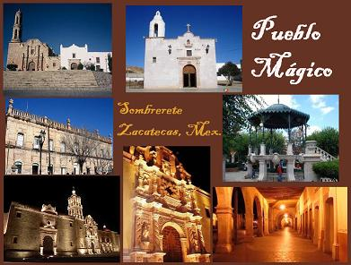

Zacatecas es un estado del centronorte de México, al noroeste de Ciudad de México. En él se encuentra el sitio arqueológico La Quemada, un gran asentamiento precolombino con un museo, una pirámide sobre un cerro y columnas. La capital del estado, también llamada Zacatecas, se encuentra a gran altura y alberga la antigua mina de plata El Edén, con un tren subterráneo que pasa por formaciones rocosas únicas, exhibiciones de depósitos de minerales y antiguas máquinas mineras
Zacatecas, oficialmente llamado Estado Libre y Soberano de Zacatecas, es uno de los treinta y un estados que, junto con la Ciudad de México, conforman México.56 Fue fundado el 23 de diciembre de 1588. Su capital y ciudad más poblada es la homónima Zacatecas. Está ubicado en la región centronorte del país, limitando al norte con Coahuila, al noreste con Nuevo León, al este con San Luis Potosí, al sur con Guanajuato, Jalisco y Aguascalientes, al suroeste con Nayarit y al oeste con Durango. Con 75,539 km² es el octavo estado más extenso, con 1,579,209 habs. en 2015, el octavo menos poblado y con 19.73 hab/km² y el sexto menos densamente poblado.